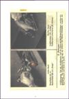
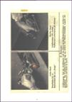

Junkers JUMO Flugmotoren
Junkers L2
29,00€
Dateigröße: 57 MB
Kompendium, gesamt 134 Seiten, bestehend aus:
Junkers L2 Ersatzteilliste, 1927
Junkers L2 und L5, Betriebsanweisung, 1928
Bestell-Nr.: LAH-372
Junkers L5
34,00€

Dateigröße: 190 MB
Kompendium, gesamt 352 Seiten, bestehend aus:
Junkers L5, Motoren-Handbuch, 1932
Junkers L2 und L5, Betriebsanweisung, 1928
Junkers L5G, Motoren-Handbuch, 1936
Bestell-Nr.: LAH-433
Junkers L88
24,00€

Dateigröße: 86 MB
L 88a-Motoren-Handbuch, 90 Seiten, 1930
Bestell-Nr.: LAH-434
Junkers 205
39,00€


Dateigröße: 470 MB
Kompendium, gesamt 1.002 Seiten, bestehend aus:
JUMO 205, Schweröl-Flugmotor, Betriebsanweisung, 1936
JUMO 205 C, Baureihe 3, Ersatzteilliste, 1937
JUMO 205 C, Baureihe 4, Ersatzteilliste, 1939
JUMO 205 C Baureihe 4, Betriebsanweisung und Wartungsvorschrift, 1940
JUMO 205 C, D und JUMO 207 B; Aufbau und Konstruktion. Lichtbild-Lehrvortrag, 1942
JUMO 205 D Baureihe 1 u. 2, Betriebsanweisung und Wartungsvorschrift, 1940
JUMO 205, Lehrmittel für technische Schulen, Lehrblätter
JUMO 205, Schweröl-Flugmotor, Prospekt mit Hauptkennwerten
JUMO 205, Wartungs-Tafel und Kennwerte, o.D.
JUMO 205, Passungen und Abmaße, 1937
Junkers, Ersatzteile für die elektrische Ausrüstung von Junkers Flugmotoren, 1942
Bestell-Nr.: LAH-1036-1
Junkers 207
39,00€


Dateigröße: 230 MB
Kompendium, gesamt 460 Seiten, bestehend aus:
JUMO 207 A und B, Motoren-Handbuch, D(Luft) T 3207, 1941
JUMO 207 B-3, Motoren-Handbuch, D(Luft) T 3207, 1942
JUMO 207 C-1, Motoren-Handbuch, Werksausgabe, 1943
JUMO 207 C, Motoren-Karte, D(Luft) T 3207 C, 1942
JUMO 205 C, D und JUMO 207 B, Aufbau und Konstruktion, Lichtbild-Lehrvortrag 1942
Junkers, Ersatzteile für die elektrische Ausrüstung von Junkers Flugmotoren, 1942
Bestell-Nr.: LAH-1052-1
Junkers 210
49,00€
Dateigröße: 825 MB
Kompendium, gesamt 1.160 Seiten, bestehend aus:
JUMO 210 B und C, Betriebsanweisung und Wartungsvorschrift, 3. Ausgabe, 1937
JUMO 210 D, Baureihe 1, Beschreibung und Teilüberholung, Teil 2, 1940
JUMO 210 D, Betriebsanweisung und Wartungsvorschrift, Teil 1, 1938
JUMO 210 D Ersatzteilliste, 2. Ausgabe, 1938
JUMO 210 G, Baureihe 1, Beschreibung und Teilüberholung, LDvT 861/2, 1940
JUMO 210 G, Baureihe 1, Betriebsanweisung und Wartungsvorschrift, 1940
JUMO 210, Lehrgang für Flugmonteure. Oktober 1939
Junkers, Ersatzteile für die elektrische Ausrüstung von Junkers Flugmotoren. 1942
Bestell-Nr.: LAH-1053-1
Junkers 211
49,00€
Dateigröße: 1,35 GB
Kompendium, gesamt 4.030 Seiten, bestehend aus:
JUMO 211 A BR 1, Betriebsanweisung, Wartungsvorschrift, Teil 1, 1938
JUMO 211 A BR 1 u. 3, Beschreibung, Teilüberholungsanleitung, Teil 2, 1940
JUMO 211 A bis F, Außensicherungen, Farbkennzeichnungen, 1944
JUMO 211 B u. D, Betr.-Anweisung u. Wartungsvorschrift, 1940
JUMO 211 B-D u. G-H, Einspritzanlage, Beschreibung und Durchsichtbilder, 1941
JUMO 211 B-D u. G-H, Vorläufige Teilueberholungsanleitung,1941
JUMO 211 B-D, G-H u. F-J, Ladedruckregler, Geräte-Handbuch, 1942
JUMO 211 B-H, Lehrtafeln, 1941
JUMO 211 F und J, Motoren-Handbuch, Werksausgabe, 1941
JUMO 211 F und J, Ersatzteilliste, Werksausgabe, 1942
JUMO 211 F und J, Ersatzteilliste, Werksausgabe, 1943
JUMO 211 F und J, Lehrtafeln, 1941
JUMO 211 F und J, Sicherungsplan, Außensicherungen, 1943
JUMO 211 F und J, N und P, Gesamt-Durchführungsplan und Modernisierungsliste, 1944
JUMO 211 F und J, Baureihe 2, Neuerungen gegenüber Baureihe 1, 1942
JUMO 211 F und J, Baureihe 1, Passungen und Abmaße, 1941
JUMO 211 F und J, Baureihe 2, Passungen und Abmaße, 1942
JUMO 211 F und J, Baureihe 1, Vorläufige Teilüberholung, 1942
JUMO 211 F und J, Baureihe 1 u.2, Bilderliste der Werkzeuge und Vorrichtungen, 1943
JUMO 211 F und J, Geräte-Handbuch Einspritzanlage, D(Luft)T 3471, 1942
JUMO 211 F und J, Arbeitsblätter für Flugmotorenschlosser und Flugzeugwarte, 1943
JUMO 211 G u. H, Ersatzteilliste, 1940
JUMO 211 Lehrblätter für Monteurschulung, 1941
Junkers Einspritzgerät 9021 A-3, Ersatzteilliste, 1943
Junkers, Ersatzteile für die elektrische Ausrüstung von Junkers Flugmotoren, 1942
Junkers Kraftstoff-Zahnradpumpe 9-2135 A-3, A-4, Änderungs-Durchführungsplan, 1944
Junkers Ladedruckregler 9-2243 A-1-3, Änderungs-Durchführungsplan, 1944
Junkers Normen, Triebwerks-Bediengestänge, 1941
Junkers Luftschrauben-Regleranlage 9-9508 C-2 und 9-9531 E-1, Ersatzteilliste, 1941
Bestell-Nr.: LAH-1017-1
Junkers 213
49,00€


Dateigröße: 167 MB
Kompendium, gesamt 890 Seiten, bestehend aus:
JUMO 213 A-0, Motoren-Handbuch, 1942
JUMO 213 A-1, C-0 Motoren-Handbuch, 1943
JUMO 213 A, Ersatzteilliste, 1944
JUMO 213 A-1, Motorbediengetriebe, 1942
JUMO 213 A-1 Motorenkarte, 1944
JUMO 213 A-1 und C-0, Überholungsanleitung, 1944
JUMO 213 A-1, Wartungsarbeiten, 1943
JUMO 213 A-1, Handbuch für das Einheitstriebwerk, 8-1013 A-1, 1943
Junkers Verstell-Luftschraube VS 111 am JUMO 213 A-1, Handbuch, 1944
Junkers Flugmotoren-ETL-Elektr. Ausrüstung, 1942
JUMO 213 Kreisläufe, 1943
Bestell-Nr.: LAH-1016-1
Junkers 004
39,00€
 

Dateigröße: 403 MB
Kompendium, gesamt 485 Seiten, bestehend aus:
JUMO 004 B-1, Triebwerk-Handbuch, Auszug aus D(Luft)T.g.3004, 1945
JUMO 004 B-1, Ersatzteilliste, 1944
JUMO 004 B-1 und B-4 Einbaumappe, 1945
JUMO 004 B-1, Kurzbetriebsanweisung, 1944
JUMO 004 B, Kleintafeln, 1944
JUMO 004 B-1 in der Me 262, JFM Lehrmittel, 1944
JUMO 004 B-1, Lehrbildreihe, 1944
Riedel-Anlasser, Technische Unterlagen, 1943
Bestell-Nr.: LAH-1032-1
Verstell-Luftschrauben
39,00€
Dateigröße: 568 MB
Kompendium, gesamt 1.228 Seiten, bestehend aus:
Junkers VS 5, Verstell-Luftschraube, Handbuch, 1939
Junkers VS 5, Verstell-Luftschraube Ausführung VS 5, Handbuch, 1940
Junkers VS 5, Verstell-Luftschraube, Lehrbildreihe, 1941
Junkers VS 9, Verstell-Luftschraube Bauart VS 9, 1944
Junkers VS 11, Verstell-Luftschrauben-Anlage am JUMO 211 F und J, 1941
Junkers VS 11, Verstell-Luftschrauben-Anlage am JUMO 211 F und J, 1943
Junkers VS 11, Ersatzteilliste, 1941
Junkers VS 11, Baureihe 3, Ersatzteilliste, 1943
Junkers VS 11, Baureihe 6, Ersatzteilliste, 1943
Junkers VS 11, Baureihe 6 mit Drehzahlregler, 1942
Junkers VS 111, Geräte-Handbuch, 1944
Junkers VS 111, Luftschraubenanlage-Karte, 1943
Junkers VLS, Bauart Hamilton Handbuch, 1938
Junkers VLS, Bauart Hamilton, Ersatzteilliste, 1939
Junkers VLS, Bauart Hamilton, Truppen-Ersatzteilliste, 1940
Junkers VLS, Bauart Hamilton, Kurz-Betriebs- u. Wartungs-Anweisung, 1939
Junkers 20° Drehzahlregler für VLS Bauart Hamilton am JUMO 211 A, 1939
Junkers Metall-Luftschrauben, Betriebsanweisung u. Wartungsvorschrift, ca. 1938
Junkers Metall-Luftschrauben, Werksprospekt, ca. 1935
Junkers Metall-Luftschraube Bauart PAK, Gebrauchsanweisung, 1943
Bestell-Nr.: LAH-438